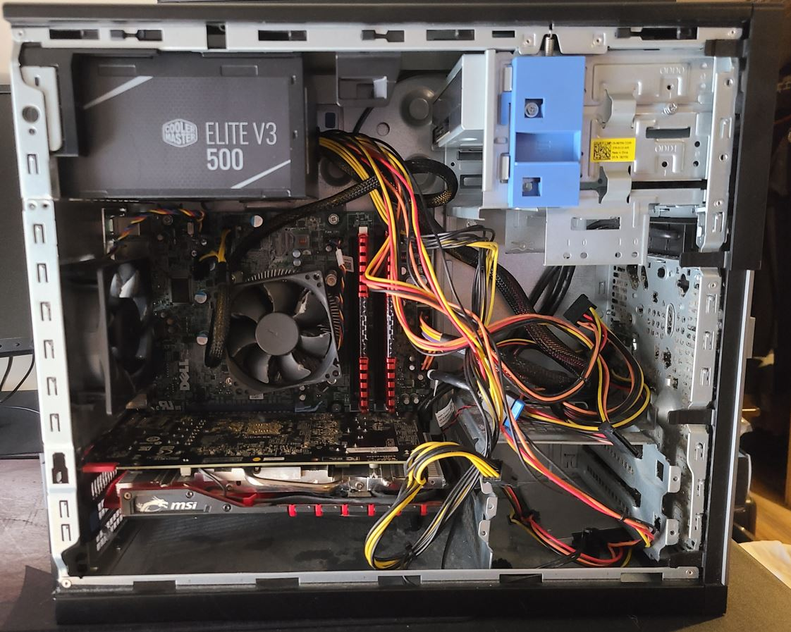
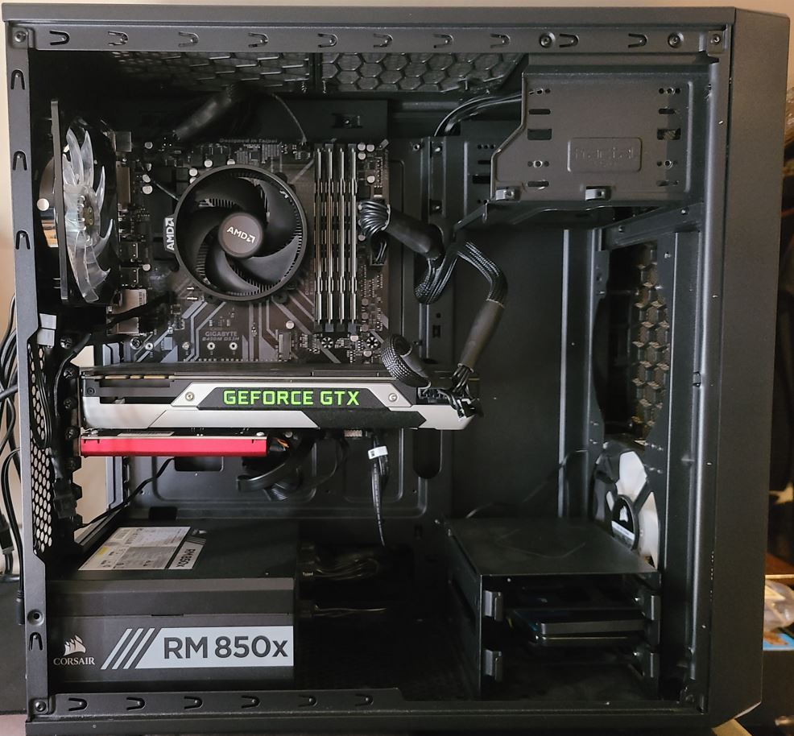
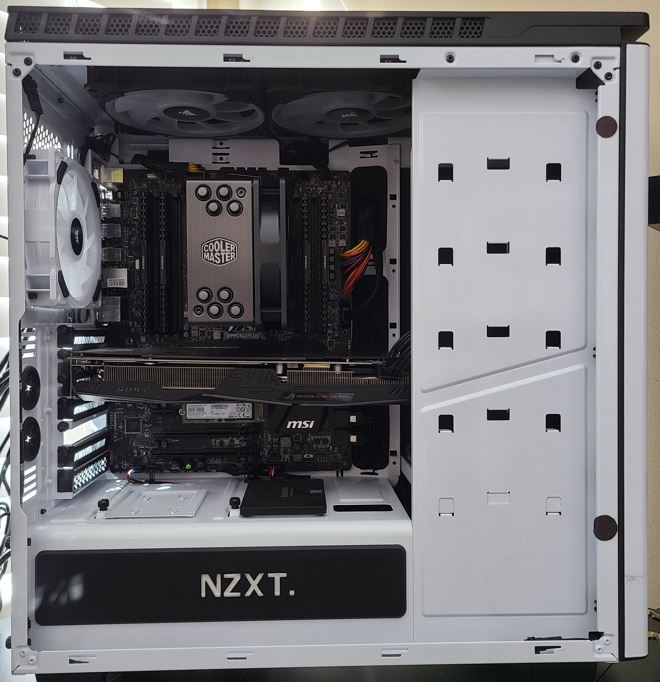

Our Computers
The First/ Optiplex 7010
The computer that started it all. We got our hands on an Optiplex 7010 that a local school was throwing away for free. It was beat up, and it was dirty, but it started up and had a licensed version of Windows running on it. We did have to change out the power supply, and we did install faster ram and clone the HDD to an SSD. This computer played really well, especially for the price. Depending on the game and the settings, it played anywhere from 50fps to 110fps. Even into 2022, it was able to play new games at lowered settings at about 50fps.In the end, this build consisted of:
- The original Optiplex 7010 motherboard
- The original Intell i5-3570
- 16GB of Corsair Vengeance 1866mhz ddr3 ram
- A used MSI r7 370 GPU with 4gb of v-ram
- Cool Master 500 watt power supply
- 500gb Samsung SSD


AMD Ryzen Build
This is where we got a little more involved with the build. With the exception of the GPU and the sound card, everything that went into this computer was new. This computer played anywhere from 75fps to 200fps depending on the game and settings. Even new relatively demanding games in 2022 played just fine around 75fps.This computer contained
- Gigabyte B450M DS3H motherboard
- AMD Ryzen 5 3600 CPU
- 32gb of Ballistix Sport 2400mhz ddr4 ram
- GTX 980 GPU with 4gb of v-ram
- Corsair RM850x 850 watt power supply
- 1x 250gb Crucial SSD and 1x 1TB Crucial SSD
- Sound Blaster Z sound card
The Current Gaming Computer
This is the current build used for gaming and streaming. We did tone the ram down in this build and only put 16gb in, but we also opted for a graphics card with 8gb of v-ram instead of 4gb like most of our other builds. Doubling the v-ram allowed us to have extra monitors attached running chat and resource monitors while gaming and streaming. With everything open and running, this computer is still capable of running games between 60fps and 150fps.Computer Specs
- MSI X99S SLI Plus motherboard
- Intell i7-5820k
- 16gb of Corsair Vengeance 2666mhz ddr4 ram
- RX 480 GPU with 8gb of v-ram
- MSI MPG Series A850GF 850 watt power supply
- 1x 120gb Samsung NVMe SSD 1x 500gn Samsung EVO SSD 1x Hitachi 1TB SSD
